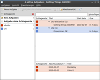
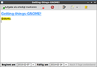

Getting Things GNOME
Dieser Artikel wurde für die folgenden Ubuntu-Versionen getestet:
Ubuntu 14.04 Trusty Tahr
Zum Verständnis dieses Artikels sind folgende Seiten hilfreich:
Getting Things GNOME!  (kurz GTG) ist ein quelloffenes Programm zur Aufgabenverwaltung für GNOME. Unter GTG kann man Aufgabenlisten im Sinne einer To-do-Liste anlegen und Unter- bzw. Teilaufgaben ergänzen. Verschiedene Plugins ermöglichen unter anderem die Zusammenarbeit mit Tomboy oder dem Internetdienst Remember the Milk
(kurz GTG) ist ein quelloffenes Programm zur Aufgabenverwaltung für GNOME. Unter GTG kann man Aufgabenlisten im Sinne einer To-do-Liste anlegen und Unter- bzw. Teilaufgaben ergänzen. Verschiedene Plugins ermöglichen unter anderem die Zusammenarbeit mit Tomboy oder dem Internetdienst Remember the Milk  . GTG setzt auf Übersichtlichkeit und Benutzerfreundlichkeit und verwendet einen simplen, aber flexiblen integrierten Texteditor zum Anlegen neuer Aufgaben.
. GTG setzt auf Übersichtlichkeit und Benutzerfreundlichkeit und verwendet einen simplen, aber flexiblen integrierten Texteditor zum Anlegen neuer Aufgaben.
Installation¶
GTG kann aus den offiziellen Paketquellen installiert [1] werden:
gtg (universe)
 mit apturl
mit apturl
Paketliste zum Kopieren:
sudo apt-get install gtg
sudo aptitude install gtg
Benutzung¶
|  |
| Aufgabenverwaltung mit GTG |
Nach erfolgreicher Installation ist das Programm bei Ubuntu-Varianten mit einem Anwendungsmenü unter "Büro → Getting Things GNOME!" zu finden. Ansonsten verwendet man den Befehl bzw. Suchbegriff gtg.
Neue Aufgaben hinzufügen¶
Neue Aufgaben können entweder über die "Schnelleintrag"-Leiste (zu aktivieren unter "Ansicht → Schnelleintrag") oder über das Menü "Aufgaben → Neue Aufgabe" bzw. über die Schaltfläche "Neue Aufgabe" in der Werkzeugleiste mit Hilfe des integrierten Texteditors hinzugefügt werden. Bestehende Einträge können durch einen Doppelklick im Texteditor geöffnet und bearbeitet werden.
Unter- bzw. Teilaufgaben können u.a. über  -Klick "→ Teilaufgabe hinzufügen" auf die übergeordnete Aufgabe angelegt werden.
-Klick "→ Teilaufgabe hinzufügen" auf die übergeordnete Aufgabe angelegt werden.
|  |
| Bearbeiten von Aufgaben |
Schlagwörter¶
Schlagwörter (Tags) können einer Aufgabe angefügt werden, indem man den Artikel öffnet und ein beliebiges Schlagwort mit vorangestelltem @ einfügt, z.B. @ubuntu. Man kann aber auch den einfachen Weg gehen und Schlagworte über -Klick "→ Schlagwort hinzufügen ..." zuordnen. Alle verwendete Schlagwörter werden in der "Schlagwörter-Seitenleiste" (zu aktivieren unter "Ansicht → Schlagwörter-Seitenleiste") aufgeführt und können dort mit einer bestimmten Farbe versehen werden.
Plugins¶
Plugins können unter "Erweiterungen → Plugin-Einstellungen" aktiviert werden.
Tomboy-Plugin¶
Mit dem Plugin für Tomboy kann man entweder eine Verknüpfung zwischen einer bestehenden Tomboy-Notiz und einer Aufgabe unter GTG herstellen oder direkt eine neue Tomboy-Notiz aus einer Aufgabe erstellen. Dazu öffnet man einfach die entsprechende Aufgabe in GTG und klickt auf die Schaltfläche "Tomboy" in der Werkzeugleiste.
Notification Area¶
Bei aktiviertem "Notification area"-Plugin erscheint GTG als Symbol (Tray icon) im Benachrichtigungsfeld des Panels. Während andere Desktop-Umgebungen damit kein Problem haben, ist dies unter Unity nur umständlich bzw. ab Ubuntu 13.04 nicht mehr möglich (siehe Unity/Unity Desktop).
Tastenkürzel¶
| Strg + N | Neue Aufgabe anlegen |
| ⇧ + Strg + N | Neue Teilaufgabe anlegen |
| Strg + T | Schlagwort hinzufügen |
| F9 | Schlagwörter-Seitenleiste anzeigen/ausblenden |
Links¶
Entwickler-PPA
- aktuellste Version, die aber noch instabil sein kann
GTD unter Linux
- Vergleich von Osmo, Tasque und Getting Things GNOME, 04/2010Notizen
 Übersichtsartikel
Übersichtsartikel
- Erstellt mit Inyoka
-
 2004 – 2017 ubuntuusers.de • Einige Rechte vorbehalten
2004 – 2017 ubuntuusers.de • Einige Rechte vorbehalten
Lizenz • Kontakt • Datenschutz • Impressum • Serverstatus -
Serverhousing gespendet von